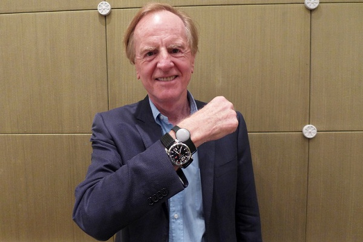

Apple history
苹果公司，截止到2017年5月25日为止，市值首次突破8000亿美元大关，达历史最高位。笔者估计乔帮主一定不会想到当初他和沃兹尼亚克一同在家里的车库创造出来的苹果会达到今天这种高度。
苹果公司可以说是一个极具传奇色彩的企业，不但创始人乔帮主是奇葩，整个公司上下都充满了奇葩的气氛。为什么要说乔帮主是个奇葩呢，关于奇葩的定义大家各有所见，但是笔者在此所说奇葩绝对是个褒义词。如果大家有阅读过一些关于乔帮主的书，那么或多或少都会知道关于乔帮主为人处世的一些东西，一千个读者就会一千个哈姆雷特，所以很多人在阅读这类书籍时，很容易就会产生误解。市面上的很多书籍为了达到宣传的效果，把乔帮主宣传得上天入地无所不能，与乔帮主一起开创苹果公司的沃兹尼亚克前段时间出来澄清了，他和乔帮主其实并未在位于洛思阿图斯的车库里进行创业，在接受《外电》采访时，沃兹尼亚克称：“外界对那间车库知之甚少，而媒体对它也过分渲染了。那个车库虽然最能够代表我们的初期创业，但是我们在那没做任何设计工作。我们将已组装好的产品运到车库，确保它们能用，然后我们再把这些电脑运到商店拿钱。”
沃兹尼亚克解释称，羽翼丰满的苹果很快就离开那间车库了。他还补充，“那个车库很少同时有超过两个人，并且大多数情况是，他们呆在那闲晃，什么也不做。”，不过人们都希望听到些附有传奇色彩的创业故事，最好是能够拍成电影那种，尽管这会有些失真
微软和苹果真的是对欢喜冤家。乔帮主一直都很憎恨盖茨盗取了他在Lisa OS上的图形界面设计，不过乔帮主的这种图形界面的人机交互操作方式好像也是在参观施乐的帕洛阿尔托研究中心时看到了一款早期的操作系统版本，之后产生了图形用户界面的创意。关于谁才是图形界面的发明者，微软、苹果和施乐打了近六年的官司，最后法院把这场官司给打回原告了，具体原因笔者一直没找到确切的相关资料，不过现有的一种说法是，最高法院也无法做出谁才是最终的图形界面发明者。
还有这么一件趣事，乔帮主一直都对Android怀恨在心，曾经落下狠话：“如果有必要的话，我愿意耗尽最后一口气，花掉苹果公司存在银行里的400亿美元，一定要纠正这个错误……我要毁掉安卓，因为它是一件剽窃产品，我将为此发动热核战争。”。Android之父Andy Rubin原本可是想把Android用在数码相机上的，直到iPhone的出现，才让Andy Rubin意识到移动设备的潮流已经非常清晰，数码相机的市场还不够大。
其实对于乔帮主这种独特的性格和气质，很多人如果不能理解的话，是非常痛苦的。比如在苹果公司工作的工程师们，很多次都向公司高层管理人员抱怨过乔帮主那奇怪的性格，他是那种喜欢直接指挥的管理者，他经常直接过问员工的具体工作，而且又总是朝令夕改，让员工感到无所适从，不少人跑去和高管们抱怨。但正是因为乔帮主这种独特的性格，才让苹果公司推出了这么多激动人心的产品。关于乔帮主在1985年因为他特立独行的性格导致了被公司董事会集体卸下CEO的职务，关于这方面的内容网上有非常多的资料，大家可以自行网上查找。
苹果公司董事会看不惯乔帮主的这种挥霍资金的做法，强烈要求他交出管理权力，由“更具经验”的职业经理人来操盘苹果公司，而乔帮主唯一争取到的权力，就是这个信任CEO的候选名单可以由他来提供。这个CEO候选人就是当时被乔布斯一语“Do you prefer to sell sugar water for the rest of your life or come with me and change the world?”击中要害的约翰·斯卡利。
斯卡利在乔帮主离开苹果公司后的担任CEO期间，为了增收营业额，还做了很多悲剧的事情。他曾一度让苹果公司进入了服装、家居、生活甚至是玩具市场，并且生产制造出了大量的商品成品。
公允的说，约翰·斯卡利并非一无是处的蠢货，只是这个不太适合苹果的家伙，被阴差阳错的放到了苹果公司掌舵人的位置上——事实上，除了乔布斯以外，可能全世界都没剩下几个人能够挽救当时的苹果——如今，约翰·斯卡利创办并经营着一家情况不错的投资公司，主要关注于可穿戴设备领域，我们也祝他一切顺利。

// 上图就是约翰·斯卡利在对着镜头演示其最新投产的智能手环产品Misfit，只支持连接iOS系统。“Misfit”这个名称就来自乔布斯及苹果公司最著名的广告《不同凡响》中：“Here’s to the crazy ones. The misfits（致那些疯狂的人们，那些与众不同的人）”。
推荐大家几个关于苹果公司和乔布斯的资料，仅供参考：
1、乔布斯传
以上内容部分来自网络